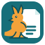

Úprava textu
Měňte existující text a přidávejte přesouvatelná textová pole s nastavitelnou velikostí.

Nettongia PDF EditorOFFLINE ÚPRAVY PDF PRO WINDOWS
Upravujte text, obrázky, stránky i formuláře přímo ve svém počítači. Přidávejte komentáře, odstraňujte citlivý obsah a podepisujte bez nahrávání dokumentů.
FUNKCE PRO KAŽDODENNÍ PRÁCI
Měňte existující text a přidávejte přesouvatelná textová pole s nastavitelnou velikostí.
Přesouvejte, otáčejte a mažte stránky pomocí náhledů, klávesy Delete nebo kontextového menu.
Rozpoznávejte český, slovenský, polský, německý a anglický text bez samostatné instalace Tesseractu.
Vkládejte, přesouvejte a upravujte obrázky nebo přidávejte vizuální podpisy.
Vytvářejte nativní textová, zaškrtávací, seznamová a podpisová pole, vyzkoušejte je v náhledu a následně vyplňte.
Přidávejte nativní poznámky a zvýraznění textu a spravujte je v pravém panelu nástrojů.
Fyzicky odstraňte citlivý text, obrázky, odkazy, komentáře a formulářová pole z vybrané oblasti.
Bezpečné uložení kopie nikdy nepřepíše otevřený zdrojový dokument.
Vracejte změny textu, objektů i stránek; rozpracovanou práci chrání lokální obnova.
SOUKROMÍ DANÉ ARCHITEKTUROU
PDF, OCR a změny dokumentů se zpracovávají lokálně. Editor automaticky neodesílá obsah, názvy ani cesty dokumentů a neobsahuje reklamní sledování.
Přečíst zásady soukromí →NEJNOVĚJŠÍ OVĚŘENÝ NÁHLED
Přenosný ZIP pro Windows 10/11 x64. Rozbalte jej do složky a spusťte NettongiaPDFEditor.exe; klasická instalace není potřeba. Jde o ověřenou, ale zatím digitálně nepodepsanou veřejnou beta verzi.
Připomínky, hlášení chyb a návrhy vítáme na support@nettongia.com.
c14d2c4f1ac1b328ba6c8c0b6b7a9697dc79224430d0607770ed9e09378dcb59